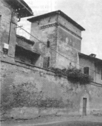

|
Giovanni
Canzi
Riccardo Felcaro
E quei bei posti
divennero squallidi
da IL MELEGNANESE n.19/1998
sabato 31 ottobre 1998

Il
castello di Zivido. Qui si
asserragliarono gli Svizzeri
nel disperato
tentativo di
resistere a Francesco I.
Ottocento mercenari elvetici
(1500
secondo altre fonti) vi
furono arsi vivi. L'intero borgo
sub� una devastazione totale.
|
Abbiamo
visto nella prima parte di questo articolo che, secondo il Pasquier, re
Francesco I alloggi� a Melegnano in un albergo – chiamiamolo cos�
per rispetto della regale autorit� – posto vicino ad un bivio. Forse
la Rosa, forse il San Giorgio, forse la Pallavicina. L'armata invece
si sparse nei dintorni compiendo gesta non propriamente cavalleresche,
molto simili purtroppo a quanto il Manzoni descrive a proposito della
guarnigione di stanza a Lecco.
In un paio di giorni la disciplina venne comunque ricomposta perch� occorreva
spostarsi in direzione di Milano, dalla quale stavano uscendo gli svizzeri
in assetto di combattimento.
Delle epiche e sanguinose giornate del 13 e 14 settembre 1515 il nostro
autore lascia una testimonianza non molto attendibile per quanto riguarda
i fatti d'arme – del resto egli � un ecclesiastico, e per giunta
con un'Ordine minore -–limitandosi probabilmente a raccogliere e
ricomporre anche quanto già scritto o narrato da altri che di arte militare
ne sapevano più di lui. Pasquier le Moyne � invece un buon testimone oculare,
al solito, di luoghi, ambienti e aneddoti.
Annota, ad esempio, che nelle vicinanze di Melegnano esisteva un piccolo
Carmelo, l'odierna chiesa di S.M. del Carmine. Della Cascina di Santa
Brigida, oggi Santa Brera, che accolse Francesco I nei giorni della battaglia,
dice che era composta da "un grande caseggiato, con quattro o cinque
portici pieni di paglia e di fieno, e attorniata da grandi prati e vigne,
con tanta uva bianca più che in qualsiasi altro posto". Le cantine
erano per� vuote, in quanto la fanteria aveva già provveduto a… fare
il pieno bevendosi tutto il vino, tanto da lasciare quasi a secco le gole
riarse di Sua Maest� e della corte.
Zivido – che l'autore chiama Genille – viene descritta
come "un bel posto, meraviglioso, che si trasform� dopo la battaglia
in un luogo molto squallido".
Il suo resoconto della battaglia, pur non arrecando sostanziali novità
rispetto ad altre fonti megli attendibili, � fiorito di curiosi particolari,
a volte ingenui, spesso sfacciatamente laudativi, talora poetici. Vale
la pena di riferirne alcuni.
Mentre infuriava lo scontro, il generale di Normandia cerc� di rianimare
un gruppo di soldati al grido di "Francia, Francia! Vittoria, vittoria!"
Per fortuna un suo servo, di nome Isacco, gli fece notare: "Attenzione,
sono Svizzeri! Li ho riconosciuti dalle calzature!".
Parlando di alcuni francesi poco coraggiosi, che invece di affrontare
il nemico si danno alla fuga, osserva che "corrono a dire i loro
paternostri". Cosa di cui Pasquier, monaco sans froc, poteva anche
intendersi.
Non c'� occasione, tra l'altro, che non gli offra lo spunto
per tessere gli elogi del suo re. Durante un attacco gli svizzeri si spingono
cos� avanti che potrebbero impadronirsi di alcuni pezzi di artiglieria;
� solo al grido di Francesco: "Animo ragazzi! io voglio vivere o
morire con voi!" che i nostri si fanno coraggio e riprendono l'offensiva.
Cos�, durante la tregua notturna (la battaglia si protrasse per due giorni),
mentre i contendenti si riposano, il re non abbandona i suoi uomini "facendo
ufficio di imperatore (nel senso latino del termine, ndr), di capitano,
di soldato. Neanche Giulio Cesare, Pompeo o Carlo Magno si comportarono
più virtuosamente (dal latino virtus, valore, ndr) di Francesco. Egli
prende un po’ di vino, poi si riposa su un pezzo di artiglieria".
Poetica � la descrizione della temporanea sospensione dei combattimenti
la sera del 13 settembre: "Sono le due di notte (circa le nostre
ore 20, ndr) la luna � tramontata, l'oscurit� abbraccia ogni cosa,
si avccendono i fuochi notturni. I contendenti sono stremati, molti sono
feriti, a malapena anche prendendosi per mano ci si riconosce. Una gran
nuvola di polvere aumenta la confusione". Ma anche per il mattino
successivo il Nostro � liricamente ispirato: "Appare la Signora Aurora,
e la stella del mattino comincia a scoprire i suoi raggi, e a dare la
sua chiarezza radiosa".
Il Pasquier narra anche l'atroce episodio dei millecinquecento svizzeri
asserragliati in Zivido e bruciati vivi o passatia fil di spada dai francesi
che avevano incendiato il paese. Cinicamente lapidario annota che "l'operazione
richiese ben tre ore".
La battaglia � terminata. Su ordine del generale di Normandia, i Francescani
di Melegnano diedero sepoltura ai caduti, compresi quanti feriti gravemente
si erano trascinati a morire nella nostra citt�. Ci� spiega forse perch�
a Melegnano sono state rinvenute alcune lapidi di nobili francesi morti
nel combattimento (cfr. G.Gerosa Brichetto, Le lapidi di Marignano). Secondo
il Pasquier sarebbero periti ben 23.000 svizzeri e soltanto 2.000 francesi,
ma sulle statistiche della battaglia regna, come � risaputo, il più grande
disaccordo tra le fonti.
L'armata di Francesco I, vittoriosa, risal� verso Milano. Il sovrano
prese alloggio in "una bellissima cascina larga e spaziosa, nella
quale c'erano le più belle scuderie per cavalli mai viste, molto
fieno e paglia e legname, sia dentro che fuori; circondata da fossati
con tanta acqua, e fuori un grande giardino, bello e spazioso, chiuso
da una muraglia. I terreni attorno sono molto fertili, tanto che vi si
fanno due raccolti all'anno di grano o di miglio, e i campi sono
attorniati da filari di viti. Tra la cascina e il fiume (in realt� si
tratterebbe di una roggia, quasi certamente la Spazzola, ndr.) si trova
la chiesa, non grande, dove si conservano molti ex voto".
Nel giardino della fattoria, identificata dagli studiosi con l'odierna
Cascina Roma, venerdì 21 settembre viene drizzata la tenda reale e, assiso
sotto questa, Francesco I riceve il giuramento di fedelt� dei Milanesi,
che lo riconoscono loro duca in quanto legittimo erede dei Visconti, che
erano stati scacciati da Milano oltre mezzo secolo prima per fare luogo
all'Aurea Repubblica Ambrosiana e poi agli Sforza, considerati usurpatori.
Pasquier racconta anche i successivi movimenti del suo sovrano. Da Milano
questi si rec� a Pavia, dove visit� i sepolcri di Severino Boezio, di
Sant'Agostino e del Barbarossa (sic!). Poi and� alla Certosa "perla
delle chiese e dei monasteri d'Italia e di Lombardia". Qui volle
salire sulla costruzione non ancora terminata per vedere come � fatta
dentro e poter apprezzare la maestria dei costruttori. Francesco I umanista
e "collezionista" d'arte � già tutto contenuto in questo
gesto non del tutto conforme a regale solennit�.
Descrivendo le molte bellezze artistiche e monumentali di Milano il nostro
cronista lascia una preziosa testimonianza dell'ultima Cena di Leonardo,
a quei tempi già celebre bench� terminata da soli vent'anni: "La
cena che Nostro Signore fece coi suoi Apostoli, dipinta su una parete,
all'entrata del Refettorio, � una cosa singolare per eccellenza,
perch� vedendo il pane sopra la tavola direste che � pane vero, e non
dipinto; e cos� pure il vino, i bicchieri, i vassoi, la tavola e le tovaglie
con le carni, ed anche i personaggi raffigurati". Questa annotazione,
apparentemente ingenua, � invece indizio di una cultura educata al criterio
estetico della "verosimiglianza"" un argomento che affatic�
le menti del Rinascimento producendo un interminabile dibattito.
Dopo avere raccolto gli allori della vittoria ed avere – temporaneamente
– riconquistato il Ducato di Milano, Francesco I ritorn� in Francia
l'8 gennaio 1516, sempre seguito dal fedele Pasquier.
L'avventura, che avr� un "secondo atto" di ben diversa
fortuna a Pavia dieci anni dopo, era durata in tutto quasi sette mesi.
|